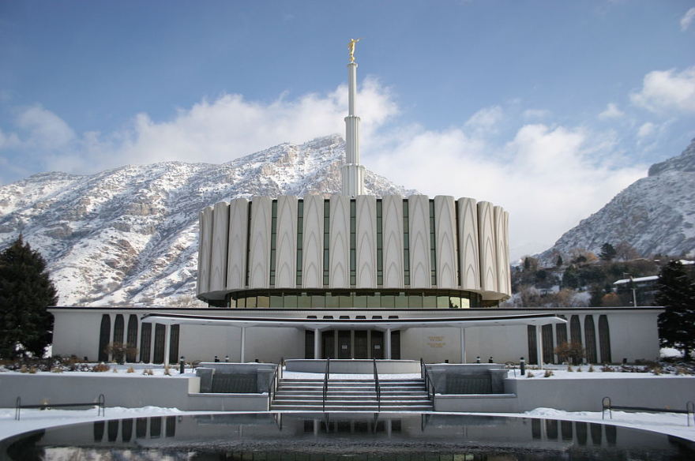

Ogden UtahOgden, Utah · January 1972Ghana Accra TempleAccra, Ghana · 11 January 2004Harare ZimbabweHarare, Zimbabwe · March 2026Johannesburg TempleJohannesburg, South Africa · August 1985Kenya NairobiNairobi, Kenya · 20th CenturyUtah Salt Lake CityUtah, Salt Lake · 1893Ogden TempleOgden, Utah · January 1972

Provo Utah TempleProvo, Utah · February 1972Oakland California TempleOakland, California · November 1964